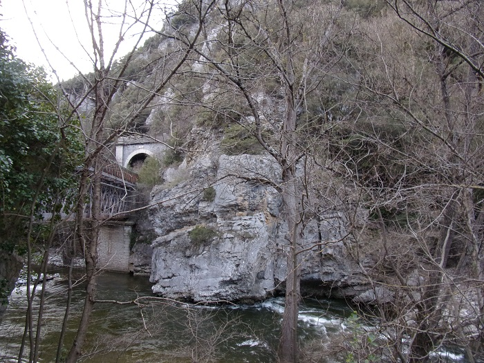
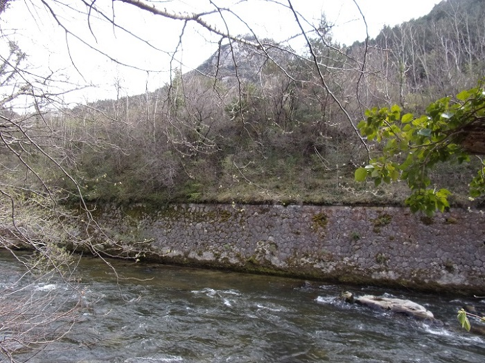
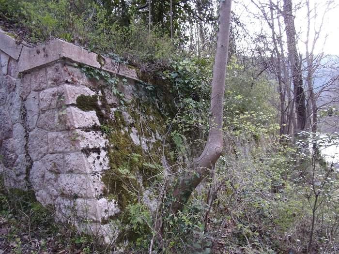
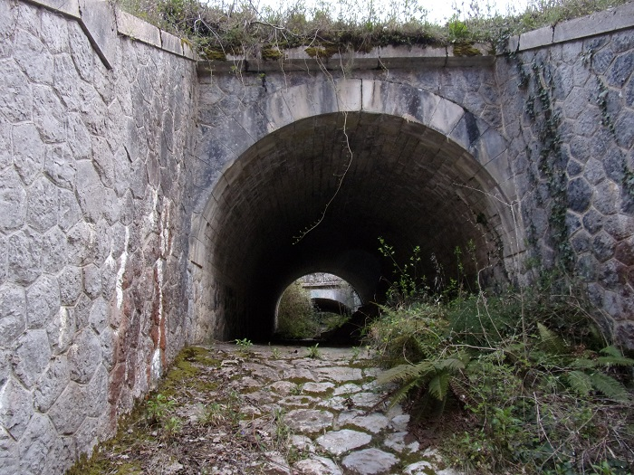
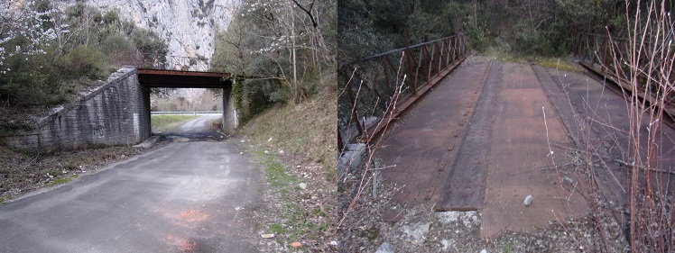
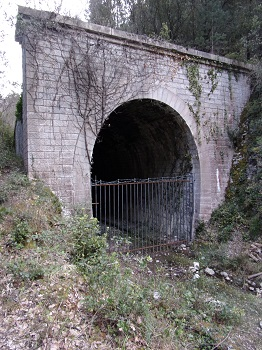
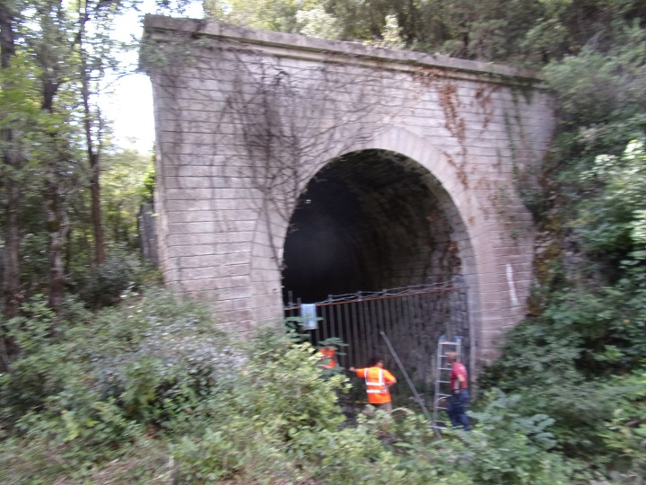
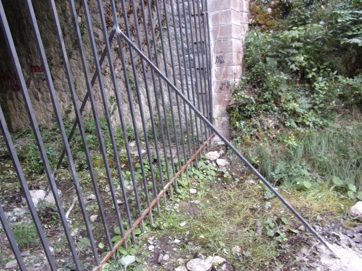

La construction de la voie ferrée a marqué profondément le paysage de la vallée de St Martin avec :
Il est un autre impact que je ne sais pas mesurer :
La multiplication par 5 du nombre d'habitants de la commune durant la période des travaux.
Les chiffres du recensement de la population, ne paraissant que tous les 5 ans, reflètent mal le phénomène mais sont un bon indicateur :
| 1891 | 185 habitants |
|---|---|
| 1896 | 448 habitants |
| 1901 | 212 habitants |
Il manque à ce tableau la période de plus forte activité au niveau du village aux alentours de 1898. Il ne me semble pas que le village lui même ait connu de nouvelles constructions, difficile de construire plus. Certaines maisons ont dû être réhabilités, mais cela n'a dû concerner que les cadres. Vraisemblablement des baraquements ont dû être montés du coté de la gare ou à l'entrée des nouveaux ouvrages. Seul le cimetière du village a gardé pendant longtemps la trace de cet afflux de population.
L'école souffre de cet afflux de population en passant d'une 15ène d'élèves à plus de 60 en 1897 - Il est refusé à la commune un second instituteur. Les élèves de la commune resteront accueillis matin et soir mais les "flottants" seront partagés en 2 groupes, chacun de pouvant venir qu'une demi journée.
La commune doit accepter l'ouverture de plusieurs débits de boisson et un débit de tabac aux lieux dit Turiasse et Carbonière (voir le registre des affaires municipales)
Dans cette page, je proposerai surtout des liens car il est difficile de donner des informations complémentaires aux articles déjà écrits.
D'abord se lien qui fait un résumé rapide de la ligne (trop car comporte des erreurs)
Historique de la ligne Carcassonne-RivesaltesIl n'y avait plus de train de marchandises entre la gare de St Martin et Quillan bien vingt ans avant la date donnée dans ce document...
Je marchais sur des traverses vermoulues ou lançais des cailloux pour décrocher des stalactites dans le tunnel du Rebuzo bien avant les années 80...
Ma grand mère me disait : "3 jours, il a suffit de 3 jours entre la décision de fermeture de cette section de ligne ferroviaire et celle d'installer l'usine de dolomie à la gare de St Martin - 7 km de ligne à maintenir contre 40 km entre St Martin et Rivesaltes..."
les dates exactes sont :
Le document suivant présente une description détaillée des différents aménagements réalisés dans la vallée de St Martin, dont le détournement de la rivière avant l'entrée des gorges, les différents tracés envisagés.
(Je ne peux que regretter les formulations quelque peu ironiques par rapport à l'œuvre de Félix Armand et à l'abnégation dont ont fait preuve les martinlysois, mes ancêtres, dans le percement de la route de la Pierre-Lys.)
Tunnel des gorges de la Pierre-lys et aménagement de St Martin
Entrée du tunnel de la Pierre-lys coté Saint Martin, le pont sur l'Aude et le chemin piétonier d'accès au tunnel rive droite de l'Aude
Dans la longue galerie du tunnel de la Pierre-lys (1km382), se trouve une grande cache à mines avec 5 compartiments creusés dans la montagne pour tout détruire en cas d'invasion.

Entre les 2 tunnels de Pierre-Lys et du Couvent, plusieurs ouvrages d'art ont été construits, une digue tout le long de l'Aude et de son nouveau lit.
 Juste avant le tunnel du couvent en particulier, un pont maçonné a été aménagé sur le petit ruisseau du couvent qui descend du Fond de la Fago pour laisser passer la voie ferrée et la N117 (à l'époque).
Un pont de fer permettait de passer au dessus de la N117, aujourd'hui plus de rail...

Le tunnel du Couvent, juste au dessus de l'ancienne abbaye construit en 1896
Tunnel du couvent
Entrées sud et nord
Le tunnel de Rebuzo juste au dessus de St Martin
Tunnel de Rebuzo
Entrée coté viaduc
Entrée coté Couvent
La petite galerie du Ravin du ruisseau de la Borde (test de ligne en rive droite de l'Aude au dessus du pont de l'Ane - via ferrata)
Tunnel du Ravin de la Borde

Le pré-tunnel de sonde du ravin de La Borde - passant à travers l'extrémité du cap de fer
Le tunnel des Oliviers juste avant d'arriver à la gare
Tunnel des Oliviers
Entrée Rebuzo - sortie gare
Descriptif du tunnel des Oliviers dressés par la SNCF en 1976, transmis par Paul Dumanois


Le tunnel de Bourrec juste après la gare
Tunnel de Bourrec

Construction de la sortie du tunnel de Bourrec,
avant le placement du pont de fer construit par la Société de construction de Levallois-Perret (succédant à La Compagnie des Etablissements Eiffel
Entrée gare - sortie pont du Bourrec
Descriptif du tunnel du Bourrec dressés par la SNCF en 1976, transmis par Paul Dumanois


Le tunnel de la Gamasse en haut du Pont d'Aliès
Tunnel de la Gamasse
Entrée/sortie du tunnel de la Gamasse (1900 - 1901)
La galerie d'Embrosse (à l'entrée d'Axat)
Galerie d'Embrosse à Axat
La voie (dé)ferrée entre Belvianes et la gare de St Martin
et entre Axat et Belvianes
Reportage des 11 et 12-5-2011 par Victor M. Lansink's Railtrash!
Forum sur la construction d'une maquette sur la gare de St Martin et l'ensemble des ouvrages d'art sur la commune, de nombreux documents sont apportés sur la ligne
Constaté le 24 mars 2022 - le coté "couvent" du tunnel de Rebuzo a été fermé par une grille couronnée de barbelé.
"L'explication est que le TPCF a passé une convention avec le département de l'Aude pour utiliser le tunnel de Rebuzo, pour remiser du matériel. La voie est prolongée jusque sur le viaduc du Rebuzo avec retournement pour les vélos rail. Elle sera prolongée sur la longueur nécessaire dans le tunnel du Rebuzo, dès que possible. Du coup cette demande d'autorisation de fermer l'entrée du tunnel [coté couvent] (proche de la route, coté Quillan) pour éviter toutes "intrusions". Ce qui arrange aussi le département en matière de sécurité." (Jean Pierre Lescure)

Voiture des salariés du Train Rouge venus renforcer la grille de fermeture - en arrière plan le groupe électrogène permetant de faire les soudures et de scier les barres horizontales ayant potentiellement permis à des visiteurs de prendre appui pour passer au dessus de la grille (?)
Salariés terminant leur intervention sur le tunnel, photo volontairement flou pour préserver le droit à l'image
Barres de renfort soudées à la grille pour la rendre plus rigide - elle en avait bien besoin car vu sa taille et la faible section des barres creuses la constituant, elle paraissait bien fragile...